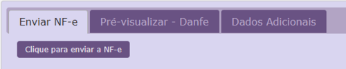

<wrapper>

    <wrapper class="body">

        <container class="center" align="center" valign="top">

            <container class="spacer float-center" height="16px" style="font-size:16px;line-height:16px;">&#xA0;
            </container>
            <container align="center" class="container float-center">

                <!-- cabeçalho logo -->
                <row>
                    <columns>
                        
                    </columns>
                </row>
                <row>
                    <columns>
                        <a class="detalhe" href="#"> visualizar este e-mail no navegador </a>
                    </columns>
                </row>

                <!-- cabeçalho imagem -->
                <callout class="box-conteudo">
                    <container class="inicio">


                        <p class="titulo" id="emissao"> EMISSÃO <br> DE NF-E </p>
                        <!--trocar para emissão nota - dar upload-->
                        
                    </container>

                    <!-- corpo do texto -->
                    <container class="conteudo">
                        <p class="titulo-nome">Olá André,</p>

                        <p class="chamada-texto">A configuração para emissão de NF-e do PDV <span class="destaque"> Nome do PDV </span>
                            foram concluídas.
                            Você já pode utilizar o sistema para a emissão dos comprovantes fiscais NF-e.
                        </p>

                        <container class="passos">
                            <p class="titulo-container">
                                EMISSÃO
                            </p>
                            <P class="texto-container" align="left">
                                Busque a venda que deseja emitir a nota e clique no ícone representado na imagem.
                            </P>
                            
                        </container>

                        <container class="passos">
                            <P class="texto-container" align="right">
                                Depois clique no botão <span class="destaque"> "Clique para enviar a NFC-e" </span>
                            </P>
                            
                        </container>

                        <container class="passos">
                            <P class="texto-container" align="left">
                                Após a nota ser autorizada o ícone ficará na cor verde.
                            </P>
                            
                        </container>

                        <container class="passos">
                            <p class="titulo-container">
                                IMPRESSÃO
                            </p>
                            <P class="texto-container" align="left">
                                O arquivo para impressão será gerado em outra aba.
                            </P>
                            
                        </container>

                        <container class="passos">
                            <p class="titulo-container">
                                CANCELAMENTO
                            </p>
                            
                        </container>

                        <container class="passos">
                            <p class="titulo-container">
                                ERRO
                            </p>
                            <P class="texto-container">
                                Se houver alguma rejeição da SEFAZ aparecerá este ícone.
                            </P>
                            <P class="texto-container">
                                Neste caso corrija o erro informado, entre, salve a venda e tente enviar a NFC-e
                                novamente.
                            </P>
                            
                        </container>

                        <container class="passos">
                            <P class="corpo-texto">
                                Erros comuns:
                            </P>
                            <ul class="inline-list corpo-texto">
                                <li> Cadastro de clientes (fora das normas da Sefaz).</li>
                                <li> Cadastros dos produtos open/acessórios (NCM, CEST, etc).</li>
                                <li> Alíquotas não correspondentes.</li>
                            </ul>

                        </container>

                        <container class="passos">
                            <P class="corpo-texto" id="after-p">
                                Em caso de dúvidas, acesse o manual do sistema, onde existem
                                algumas soluções de possíveis problemas.
                            </P>
                        </container>

                        <container class="conteudo-container">
                            <a class="acesso-manual" target="_blank" href="http://www.vivo.com.br/atendimento">
                                <span class="fa fa-book" aria-hidden="true"></span>Acessar o manual </a>
                        </container>

                        <container class="passos">
                            <P class="texto-container" id="before-btn">
                                Caso tenha dificuldade em solucionar os erros acesse o atendimento online do Vivo Go.
                            </P>
                            
                        </container>

                        <container class="passos">
                            <P class="corpo-texto" id="before-final">
                                <span class="destaque"> Obs: </span> Os ícones são os mesmos para emissão de NFC-e de
                                transferência, nesse caso vá em <span class="destaque" id="caminho-nfc"> Gestão de estoque > Estoque > Transferir estoque </span>,
                                localizar a transferência desejada e acionar o ícone informado.
                            </P>
                        </container>

                        <p class="final text-center" align="middle"> Qualquer dúvida estamos à disposição. </p>

                    </container>

                    <spacer size="30"></spacer>

                </callout>

            </container>

            <spacer size="30"></spacer>

            <container class="rodape-div">
                <p class="rodape text-center" align="middle"> Telefone: <strong> (67) 3352-3456 / (67) 99614-1046 / (67)
                    99972-3456 / (11) 99558-1504 </strong></p>
                <p class="rodape text-center" align="middle"> E-mail: <strong> contato@before.com.br </strong></p>
                <p class="rodape text-center" align="middle"> Rua Tapajós, 527 - Bairro Vila Rica - Campo Grande/MS </p>
                <p class="rodape text-center" align="middle"> Copyright © 2017 Vivo Go. Todos os direitos
                    reservados. </p>
            </container>

            <spacer size="30"></spacer>

        </container>

    </wrapper>
</wrapper>

